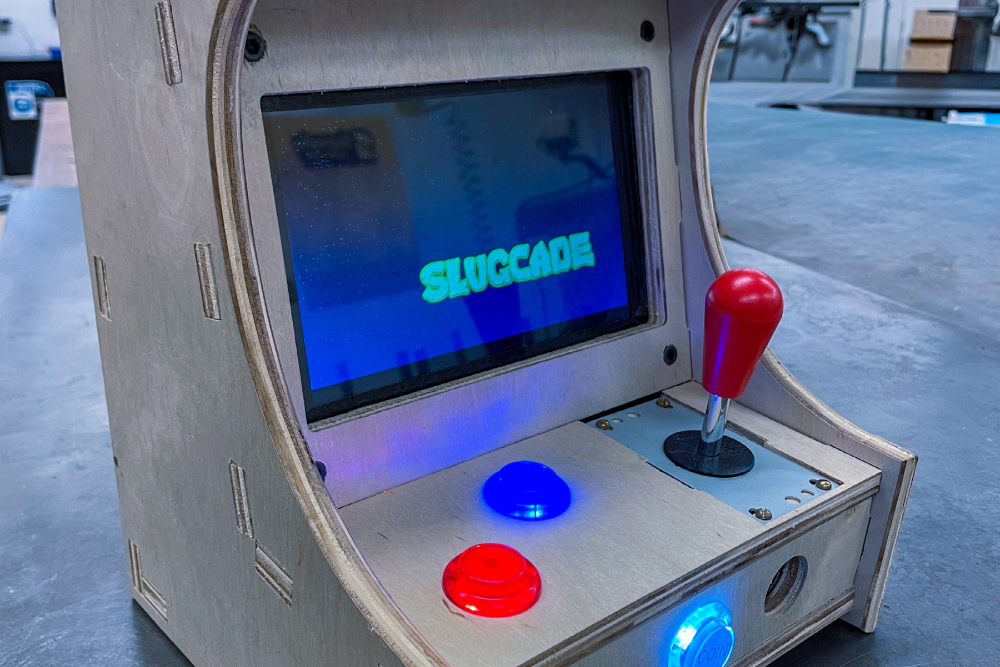
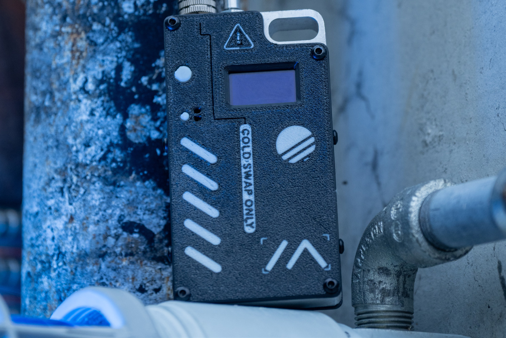

Ideas,
made real.
I’m Grey Lunk. I design and build physical objects—from accessible interfaces to instruments and connected hardware.
Explore the work
Selected work.
Four projects exploring how things feel, how they work, and how they come together.
Ergo Mk1
An ergonomic mouse that brings a sensor, joystick, scroll wheel, and four action buttons into one approachable device.

Heartline
A four-string electric bass combining purpleheart, flame maple, passive electronics, and CNC craftsmanship.

PL4Y
A collaborative Slugworks arcade cabinet designed for events, with a retro feel and a modern Raspberry Pi core.

Deadlink
An iterative enclosure and electronics project built around a HelTec V3 radio node running Meshtastic.
Sketch it. Build it.
Make it better.
Start with the experience.
A comfortable grip, a balanced instrument, or an engaging arcade cabinet: each project begins with the person using it.
Work across disciplines.
CAD, CNC machining, 3D printing, and electronics turn sketches into physical prototypes that can be assembled and tested.
Learn from the build.
Prototypes reveal what drawings miss. Testing and fabrication guide the next iteration, from component placement to material choices.